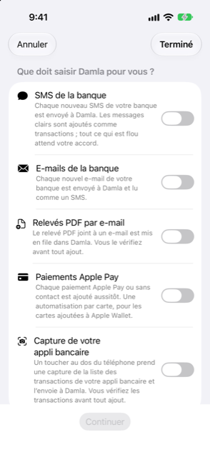

Guide › Capture automatique
L'assistant de configuration des automatisations
Réglages > Automatisations > Configurer pas à pas.
L'assistant de configuration vous accompagne pour créer les automatisations Shortcuts qui alimentent Damla, un type de saisie à la fois, puis surveille l'arrivée de votre première vraie alerte pour confirmer que tout fonctionne. iOS ne permet pas à une app de créer des automatisations, donc vous créez chaque automatisation une seule fois, à la main, dans l'app Shortcuts, et l'assistant vous guide à chaque étape et vérifie le résultat.

Quand l'utiliser
- Vous configurez Damla et voulez que sa saisie automatique fonctionne, avec les étapes exactes présentées devant vous.
- Vous voulez ajouter un type de saisie de plus — par exemple les e-mails de la banque — et il vous faut les étapes exactes pour cela.
- Une automatisation que vous avez créée à la main n'a jamais fonctionné, et vous voulez la refaire avec les étapes devant vous.
Pas à pas
- Ouvrez Réglages, puis Messages bancaires et relevés, puis Automatisations (Raccourcis), et touchez Configurer pas à pas.
- Sur la première page, Que doit saisir Damla pour vous ?, activez ce que vous voulez. Chaque choix a une explication d'une ligne en dessous :
- SMS de la banque — chaque nouveau message de votre banque est envoyé à Damla ; ceux qui sont clairs sont ajoutés comme transactions, et tout ce qui ne l'est pas attend votre accord. - E-mails de la banque — chaque nouvel e-mail de votre banque est envoyé à Damla et lu comme un SMS. - Relevés PDF par e-mail — le PDF joint à un e-mail est mis en file d'attente dans Damla, et vous le vérifiez avant que quoi que ce soit ne soit ajouté. - Paiements Apple Pay — chaque paiement Apple Pay ou sans contact est ajouté immédiatement ; une automatisation par carte, pour les cartes que vous avez ajoutées à Apple Wallet. - Capture de votre appli bancaire — un toucher au dos du téléphone capture la liste des transactions de votre appli bancaire et l'envoie à Damla ; vous vérifiez les transactions avant que quoi que ce soit ne soit ajouté.
- Touchez Continuer. Chaque type que vous avez choisi reçoit sa propre page, à tour de rôle.
- Sur chaque page, saisissez l'expéditeur en haut et touchez Enregistrer, quand le type en a besoin : un nom ou numéro d'expéditeur pour les SMS de la banque ; une adresse e-mail d'expéditeur (ou une partie) pour les e-mails de la banque et les relevés PDF ; les 4 derniers chiffres de la carte pour Apple Pay. Le type capture d'écran n'a besoin d'aucun expéditeur. Le champ est prérempli avec le premier expéditeur déjà enregistré pour ce type, s'il y en a un.
- Lisez les étapes numérotées pour l'app Shortcuts sur la même page. Vous pouvez sélectionner et copier le texte de chaque étape.
- Touchez Ouvrir l’app Raccourcis et suivez-y les étapes. Ou touchez Copier la requête pour Apple Intelligence et collez la requête dans l'Apple Intelligence de l'app Shortcuts, pour qu'il construise l'automatisation pour vous. Le bouton indique Copié une fois la requête dans le presse-papiers.
- Touchez Suivant pour passer au type suivant, ou Retour pour corriger le précédent.
- La dernière page est Tester. Envoyez-vous un test : faites déclencher l'automatisation une fois, avec un vrai SMS, un e-mail ou un paiement de cet expéditeur, ou lancez le raccourci.
- La page affiche En attente de la première alerte… jusqu'à ce que quelque chose arrive pendant que vous y êtes, puis une coche verte avec ce que Damla a reçu et les mots Tout est prêt. Touchez Terminé. Pas près de votre banque ? Touchez Je testerai plus tard et testez quand cela vous convient.
Si rien n'arrive
- La section Ça fonctionne ? de l'écran Automatisations indique si quelque chose est déjà parvenu à Damla, et quand le dernier message de la banque est arrivé.
- Après avoir configuré une automatisation, envoyez-vous un message de test. S'il n'apparaît pas dans Alertes récentes dans la minute, l'automatisation ne fonctionne pas : vérifiez qu'elle est réglée sur Exécuter immédiatement.
- Un relevé ou une capture d'écran n'apparaît pas dans Alertes récentes — il attend une vérification à la place. L'assistant surveille aussi cette file d'attente, et vous dit quand un relevé est arrivé à vérifier.
Bon à savoir
- L'assistant lui-même ne crée rien dans Shortcuts. Il enregistre les expéditeurs que vous saisissez, montre les étapes et surveille l'arrivée de la première alerte. Vous créez l'automatisation une fois, dans l'app Shortcuts.
- Les étapes et la requête sont les mêmes que celles affichées sur l'écran Automatisations, où vous pouvez aussi copier les étapes sous forme de texte et copier un expéditeur.
- Annuler et Terminé ferment l'assistant. Les expéditeurs que vous avez enregistrés en chemin restent enregistrés, et vous pouvez rouvrir l'assistant quand vous voulez.
- Les libellés de votre iPhone peuvent différer légèrement des étapes.
- Si les actions de Damla manquent dans Shortcuts, l'écran Automatisations liste les actions à chercher — Ajouter à Damla, Ajouter un relevé à Damla, Ajouter un paiement par carte à Damla, Combien puis-je dépenser — et quoi faire : ouvrez Damla, forcez l'arrêt de Shortcuts et rouvrez-le ; si une action manque toujours, redémarrez l'iPhone.
Articles liés
- Comment fonctionne la saisie automatique
- SMS et e-mails de la banque
- Paiements Apple Pay et Wallet
- Dépannage
Quelque chose n’est pas clair ou manque ? Écrivez à support@raveniq.ai en indiquant la page.